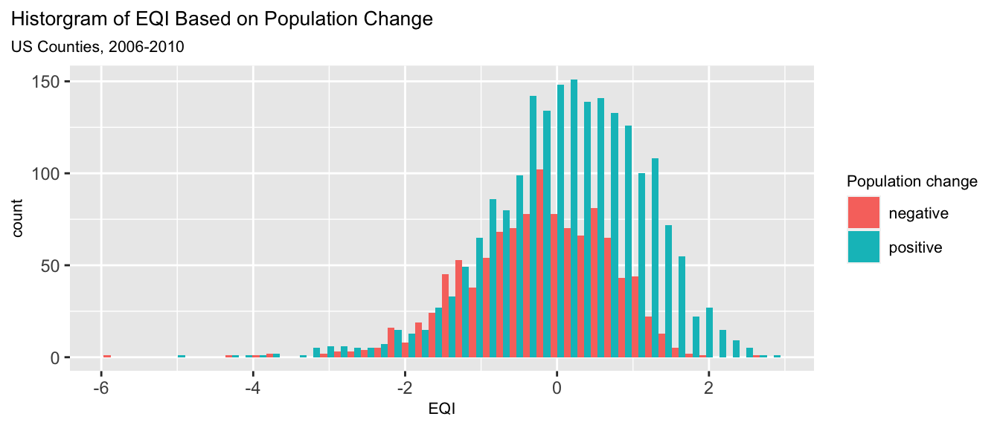
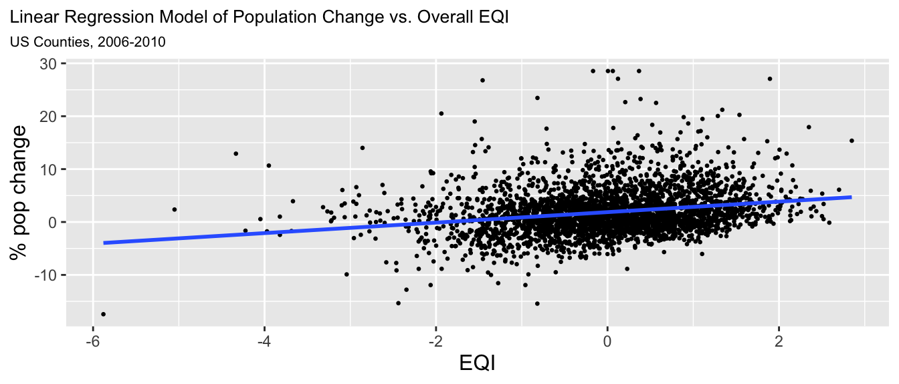
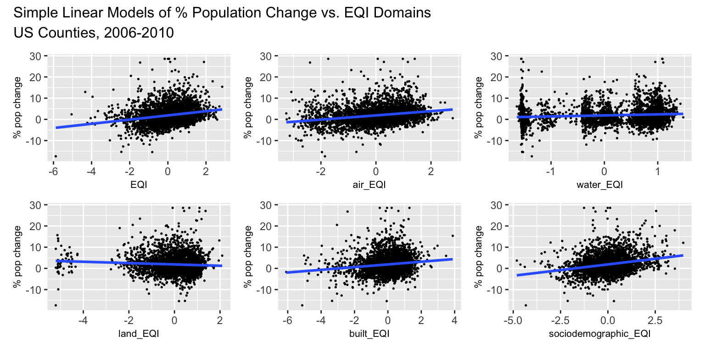
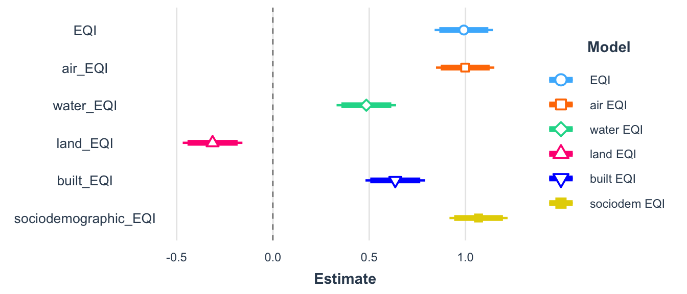

| Domain | Constructs |
|---|---|
| air | criteria air pollutants and hazardous air pollutants |
| water | overall water quality, general water contamination, domestic use, atmospheric deposition, drought, chemical contamination, and drinking water quality |
| land | agriculture, pesticides, facilities, radon, and mining activity |
| built | roads, highway/road safety, commuting behavior, housing environment, walkability, and green space |
| sociodemographic | crime, socioeconomic, political character, and creative class representation |
This post discusses a statistical analysis used to answer the question: Does environmental quality influence where people live in the United States?
Background
The Environmental Quality Index (EQI), developed by the U.S. Environmental Protection Agency (EPA) provides a county level snapshop of environmental conditions throughout the country. EPA first released EQIs for the period 2000-2005 and updated these indexes for 2006-2010. This statistical evaluation focuses on the 2006-2010 EQI. The purpose of the EQI is to use (1) as an indicator of ambient conditions/exposure in environmental health and modeling and (2) as a covariate to adjust for ambient conditions in environmental models (EPA 2020). Previous studies have used the EQI to evaluate relationships between environmental quality and public health outcomes such as cancer incidence, asthma, obesity, and infant mortality.
The EQI is developed from five domains each with identified environmental constructs as shown in Table 1. Each county has an overall environmental index and a domain specific index. Indexes were also stratified by rural-urban continuum codes (RUCCs) for counties classified as metropolitan urbanized, non-metro urbanized, less urbanized, and thinly populated.
Limitations
While the EQI can identify counties with higher environmental burdens, it may not identify environmental injustices at the local community level. The EQI cannot quantify environmental exposure for individuals and reflects only outside environmental conditions, not indoor conditions. The EQI can be used to identify locations for future research, but is not intended for regulatory purposes or as a diagnostics tool. Due to changes in methodology and datasets, the 2000-2005 and 2006-2010 EQIs should not be directly compared.
The Data
Environmental Quality Index
To develop the EQI, variables were identified from available data to represent each environmental domain and assessed for collinearity so redundant variables could be excluded. Variables were standardized based on geographic space or on a per capita rate, as appropriate and transformations such as log-transformations were performed as needed based on the normality of each variable. Data gaps were evaluated to distinguish between missing data and meaningful zeros. Where applicable, spatial kriging was used to interpolate values when data was not available for all counties. Principal component analysis was used to aggregate variables into domain specific indexes. The domain indexes were then aggregated into overall indexes for each county. A result of this method is that each domain does not equally influence the overall EQI value for a given county. The EQI is developed to be normally distributed with mean=0 and standard deviation=1. Higher EQI values correspond with worse environmental quality. Lower (more negative) EQI values correspond with better environmental quality.
Census Population Data
County level population data was obtained from the U.S. Census Bureau’s county intercensal datasets for 2000-2010. Percent population change was calculated for 2006-2010 then winsorized to remove outliers above the 99.9th percentile (ie. counties with population change above 28.5%).
Statistical Analysis
Kalawao County, Hawaii had the lowest EQI value (highest environmental quality) and greatest decrease in population (-17.4%). Falls Church, Virginia had the highest EQI (lowest environmental quality) and a population change of 15.4% which falls is the 99th percentile. The summary statistics in Table 2 suggest that population growth is correlated with worse environmental characteristics.
| Population Change | Min | Max | Mean | Standard Deviation | Variance | Number of Counties |
|---|---|---|---|---|---|---|
| negative | -5.88 | 2.59 | -0.24 | 0.93 | 0.87 | 1088 |
| positive | -5.05 | 2.85 | 0.13 | 1.01 | 1.02 | 2052 |
| all counties | -5.88 | 2.85 | 0.00 | 1.00 | 1.00 | 3140 |
Hypothesis Testing
A different means test was completed to determine if mean environmental quality was statistically different for counties that experienced positive vs. negative population change between 2006-2010. The figure below shows a histogram of EQI values for counties with negative and positive population change.

null hypothesis: There is no difference in mean EQI for counties with positive and negative population change.
\[H_{0}: \mu_{posPopChange} - \mu_{negPopChange} = 0\]
alternative hypothesis: There is a difference in mean EQI for counties with positive and negative population change.
\[H_{A}: \mu_{posPopChange} - \mu_{negPopChange} \neq 0\]
\[\text{point estimate} = \mu_{posPopChange} - \mu_{negPopChange} =0.131 - -0.245 = 0.376\]
The standard error for the difference in means is:
\[SE = \sqrt{\frac{s_1^2}{n_1} + \frac{s^2_2}{n_2}} = \sqrt{\frac{1.009^2}{2052} + \frac{0.933^2}{1088}} = 0.036\]
The z-score for hypothesis testing is:
\[z = \frac{\text{point estimate - null}}{SE} = \frac{0.376 - 0}{0.036} = 10.443\]
The p-value, the probability of getting a point estimate at least as extreme as calculated if the null hypothesis were true, is:
\[p\text {-value }=\operatorname{Pr}(Z<-|z| \text { or } Z>|z|)=2 * \operatorname{Pr}(Z>|z|) = 1.5809578\times 10^{-25}\]
Since the p-value is < 0.001 we reject the null that there is no difference in EQI for counties with positive population change versus negative population change. There is a statistically significant difference (at the 0.1% significance level) in EQI across the two population change groups. The 95% confidence interval ranges from 0.31 to 0.45. This means that there is a 95% chance that this interval includes the true difference in mean EQI between counties with positive and negative percent population change.
Linear Regression
Linear regression was used to model the relationship between population change and environmental quality using the overall EQI value and each domain specific EQI to determine if a particular domain was a stronger predictor of population change.
\[\text{percent population change}_i=\beta_{0}+\beta_{1} \cdot EQI_i + \varepsilon_i\]

First, hypothesis testing was used to test whether the slope coefficient for the percent population change rate is equal to zero or not.
null hypothesis: The slope coefficient is equal to zero
\[H_{0}: \beta_{1} = 0\] alternative hypothesis: The slope coefficient is NOT equal to zero
\[H_{A}: \beta_{1} \neq 0\] ::: {.cell}
:::
The point estimate, \(\beta_1\) = 0.991 and the standard error, SE = 0.077.
\[z = \frac{\text{point estimate - null}}{SE} = \frac{{0.991 - 0}}{0.077} = 12.817\]
\[p\text {-value }=\operatorname{Pr}(Z<-|z| \text { or } Z>|z|)=2 * \operatorname{Pr}(Z>|z|) = 1.0849376\times 10^{-36}\]
Since the p-value for the slope coefficient was < 0.001, we reject the null hypothesis that EQI has no influence on population change at the 0.1% level. There is a statistically significant relationship between EQI and percent population change and the coefficient is significantly different from zero. Based on value of \(\beta_1\), for each one unit increase in EQI, the percent population change increases by 0.991. The 95% confidence interval for the slope coefficient ranges from 0.84 to 1.143. This means that there is a 95% chance that this interval includes the true county level rate of change for percent population change for each one unit change in EQI.
Domain Specific Linear Models
\[\text{percent population change}_i=\beta_{0,domain}+\beta_{1,domain} \cdot EQI_{i,domain} + \varepsilon_i\] ::: {.cell}
:::

While a partly manual method was used above, statistical functions in R were used to test for the significance of domain models. Table 3 presents coefficients for each domain specific model. The numbers in [brackets] are the 95% confidence intervals for each estimated coefficient.
| coefficient | overall EQI | air model | water model | land model | built model | sociodem model |
|---|---|---|---|---|---|---|
| Intercept | 1.868 *** | 1.869 *** | 1.868 *** | 1.868 *** | 1.867 *** | 1.868 *** |
| [1.716, 2.019] | [1.717, 2.020] | [1.714, 2.023] | [1.713, 2.024] | [1.713, 2.021] | [1.718, 2.019] | |
| EQI | 0.991 *** | |||||
| [0.840, 1.143] | ||||||
| air EQI | 0.998 *** | |||||
| [0.847, 1.150] | ||||||
| water EQI | 0.485 *** | |||||
| [0.331, 0.640] | ||||||
| land EQI | -0.314 *** | |||||
| [-0.469, -0.158] | ||||||
| built EQI | 0.635 *** | |||||
| [0.481, 0.790] | ||||||
| sociodem EQI | 1.068 *** | |||||
| [0.917, 1.219] | ||||||
| n | 3140 | 3140 | 3140 | 3140 | 3140 | 3140 |
| R2 | 0.050 | 0.051 | 0.012 | 0.005 | 0.020 | 0.058 |
The figure below provides a visual comparison of each model result. The bold portion of the line represents the 90% confidence interval and the full line represents the 95% confidence interval for each estimate.

The p-value on the slope coefficient was < 0.001 for all domain specific linear models which indicates a statistically significant relationship at the 0.01% level. Based on the \(R^2\) values and slope coefficients, the air and sociodemographic domains account for most of the overall relationship between population change and EQI. All domains except land are positively correlated with population change. Since higher EQI values indicate poorer environmental quality, these models show that population increased more in counties with worse environmental conditions. For a one unit increase in sociodemogrpahic EQI, the percent population change increases by 1.068. For a one unit increase in air EQI, the percent population change increases by 0.998. The \(R^2\) terms represent the variance in percent population change that can be explained by EQI. For the overall EQI value, 5% of the variance in percent population change is explained by environmental conditions. The sociodemographic EQI explains 5.8% of the variance in population change while the air EQI explains 5.1%.
Conclusions
The identified relationships between population change and environmental quality are noteworthy for their public health and environmental justice implications. Positive population trends in areas with worse environmental conditions could result in increased incidences of cancer, asthma, obesity, and infant mortality. While this project did not evaluate economic variables, locations with higher environmental quality could also have higher living costs which drive people to move to more affordable places. If economic factors contribute to population growth in counties with poor environmental quality, then this could negatively affect the health of vulnerable populations and perpetuate social inequalities. Further analysis could evaluate trends in mean household income to determine if there is growing income inequality between counties with better and worse environmental quality. Economic variables and other factors influencing demographic shifts from rural areas to cities may be stronger predictors of population change than environmental quality.
Data availability:
EPA Datasets and files from the EQI county data from 2006-2010
U.S. Census Bureau County Intercensal Tables: 2000-2010
References
U.S. EPA. Environmental Quality Index - Technical Report (2006-2010) (Final, 2020). U.S. Environmental Protection Agency, Washington, DC, EPA/600/R-20/367, 2020.
U.S. Census Bureau. County Intercensal Datasets: 2000-2010. https://www.census.gov/data/datasets/time-series/demo/popest/intercensal-2000-2010-counties.html
Citation
BibTeX citation:
@online{rivers2021,
author = {Rivers, Marie},
title = {Does {Environmental} {Quality} {Influence} {Where} {People}
{Live?}},
date = {2021-12-02},
url = {https://marierivers.github.io/posts/2021-12-02-environmental-quality-population-change/},
langid = {en}
}
For attribution, please cite this work as:
Rivers, Marie. 2021. “Does Environmental Quality Influence Where
People Live?” December 2, 2021. https://marierivers.github.io/posts/2021-12-02-environmental-quality-population-change/.